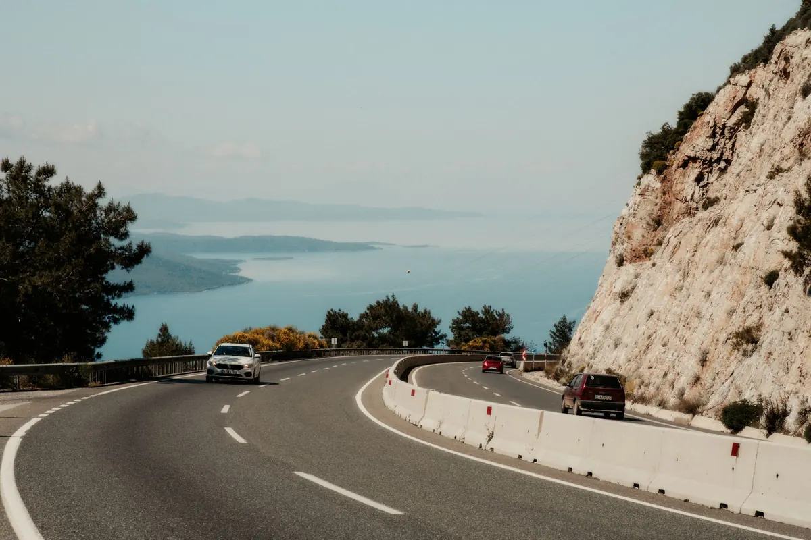
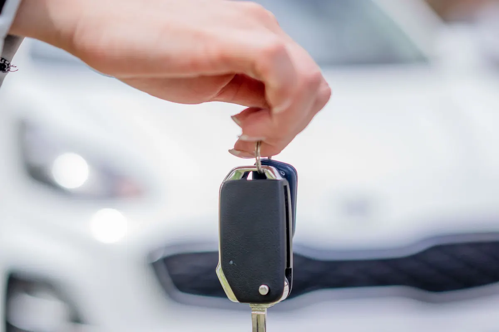

Havalimanı teslim · 7/24 · TR · EN · DE · RU
Uçaktan inin,
anahtar elinizde.
Ekonomik, SUV ve 9 kişilik araçlar. Havalimanında karşılama, depozito ve kasko bilgisi baştan net; rezervasyon WhatsApp'tan dört dilde.
Araç kiralama · Antalya Havalimanı
Araçlar ve fiyatlar
Günlük fiyatlar temsilîdir; sezona ve gün sayısına göre değişir.
- 01Ekonomik (manuel)1.400 TL/gün'dentemsilî
Benzinli, 5 kişi, klima.
- 02Kompakt (otomatik)1.900 TL/gün'dentemsilî
Dizel, 5 kişi.
- 03SUV (otomatik)2.900 TL/gün'dentemsilî
Geniş bagaj, 5 kişi.
- 049 kişilik minivan3.800 TL/gün'dentemsilî
Aile ve grup.
- 05Bebek koltuğu150 TLtemsilî
Günlük.
- 06Tam kasko450 TLtemsilî
Muafiyetsiz, günlük.
Fiyatlar örnek işletmeye aittir. Haftalık kiralamada %15 indirim.


Hakkımızda
Firma hakkında
2012'den beri Antalya Havalimanı'nda. 40'tan fazla araç, 7/24 karşılama.
Rezervasyon onayı, karşılama noktası ve teslim fotoğrafları WhatsApp'tan gelir.
Ekip (örnek)
- Tolga Ç.operasyon
- Irina K.Rusça ve İngilizce rezervasyon
- Mehmetteslim ve karşılama
- GeceAyşe + nöbetçi
Sık sorulanlar
Merak edilenler
Depozito ne kadar?
Ekonomik sınıfta 5.000 TL, kredi kartına provizyon olarak alınır.
Havalimanında nerede karşılıyorsunuz?
Dış hatlar çıkışında isim tabelasıyla; uçuş numaranızı takip ederiz.
Yaş ve ehliyet şartı?
21 yaş ve 2 yıllık ehliyet; SUV için 25 yaş.
İletişim
Bize ulaşın
- AdresHavalimanı yolu · Muratpaşa / Antalya (örnek adres)
- Saatler7/24 teslim · ofis 08:00–22:00
- Telefon0242 ••• •• •• (örnek)
- WhatsAppasistanı deneyin ↓